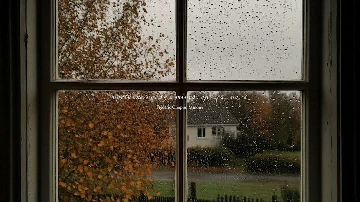

4:42

Lana Del Rey-White Mustang(Ofiicial Music Video)
50 M views · 6 years ago
1:00:34
Calm your thoughts.
1,5 M views · 10 months ago
2:45

You're Studying at an Oxford Library at Night | Dark Academia Playlist
164 B views · 1 month ago

46:33
An autumn comfort playlist (classical + instrumental)
5,3 B views · 13 hours ago
2:06:01

escape reality with this playlist | late night vibe songs
5,3 M views · 6 months ago
5:50
Frédéric Chopin - Nocturne Op. 9 No. 1 \\ Jacob's Piano
422 B views · 5 years ago